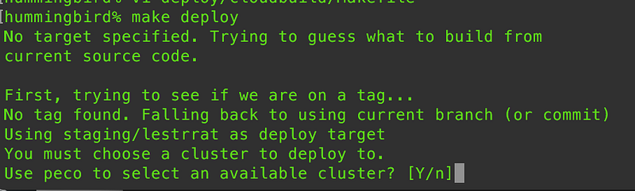
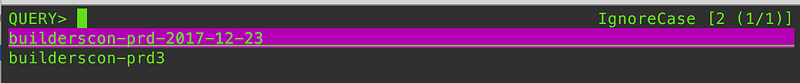

Using peco To Choose GKE Deploy Cluster
Using peco To Choose GKE Deploy Cluster
When you have multiple clusters in GKE, it’s annoying to switch the target to deploy (note: do not tell me I should never manually interact with k8s clusters to deploy and to use a CD software instead. That’s not the point).
Luckily, I’m the author of a tool called peco
And so, by simply piping the output of gcloud container clusters list --format 'value(name)' to peco, I can do this:


My Container Builder script later on does a gcloud container clusters get-credentials $cluster-name and helm insta/upgrade does the right thing.
Although I’m the author of peco, I seldom use it except for the combination of ghq and peco to navigate between my repos.
And this time it just fit so perfectly well, I just wanted to brag. And yes, you can easily do the same thing with other tools such as percol and fzf
percol - adds flavor of interactive filtering to the traditional pipe concept of UNIX shellgithub.com
Happy hacking!